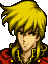
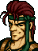

ワールドマップ
エバンス城にエーディンの姿はなかった。Edain was nowhere to be found at Evans Castle.
すでに公女はヴェルダン国内へと、
連れ去られた後だったのだ。The princess had already been taken away into Verdane territory.
ヴェルダンは、深い森におおわれた国。Verdane is a nation covered in deep forest.
たびたび 国境を荒らしたヴェルダンを
グランベルの人々は蛮族と呼んでいる。The people of Grannvale call Verdane, which has repeatedly raided the border, barbarians.
今のヴェルダン王バトゥの代になって、
国境での戦いは止んでいた。Under the current Verdane king, Batu, the fighting at the border had stopped.
おだやかな性格のバトゥ王は、
野望にもえる息子たちをなだめThe even-tempered King Batu placated his sons, who burned with ambition,
グランベルとの和平を保っていたのだ。and kept the peace with Grannvale.
しかし、その和平は
他ならぬバトゥ自身によって破られた。But that peace was broken by none other than Batu himself.
バトゥ王は、三人の息子たちに
グランベル侵略の命を下した。King Batu gave his three sons the order to invade Grannvale.
ジェノア城の次男キンボイスHis second son, Kinbois, at Genoa Castle;
マーファ城には、長兄ガンドルフ
そして末弟ジャムカat Marfa Castle, his eldest son Gandolf, and his youngest son, Jamka.
森にひそむ蛮族たちが
シグルドを待ち受けている。Barbarians lurking in the forest lie in wait for Sigurd.
エーディンは一体、どこにいるのか、
バトゥ王はなぜ、戦いを望むのか・・・。Where on earth is Edain, and why does King Batu seek war...
目の前にひろがるのは、
昼なお暗い、ヴェルダンの大森林。What spreads out before him is Verdane's great forest, dark even at midday.
精霊が住むという森に、
シグルドは足をふみいれようとしていた。Sigurd was about to set foot in the forest said to be home to spirits.
オープニング（ノディオン）

ごくろうだな、
国境の守りはたのんだぞGood work. I've left the border's defense to you.

はっ、エルトシャン様！Yes sir, Lord Eldigan!
(エルトシャンがエバンス城に向かう)
オープニング（エバンス）
シグルド、久しぶりだな
エバンスを制圧するとは、
どういうわけだ？Sigurd, it's been a while. Occupying Evans—what's the meaning of this?
ヴェルダンに
攻めこもうとでもいうのか？Are you perhaps thinking of pressing on into Verdane?

エルトシャン、よく来てくれた
ユングヴィのエーディン公女が、
連れ去られたEldigan, thank you for coming. Princess Edain of Jungby has been taken away.
ヴェルダンがどうしても
公女を返さないのなら、
戦うよりほかに仕方がないのだIf Verdane absolutely won't give her back, I have no choice but to fight.
なるほど、そういうことか
しかし、今エバンス城をあければ、I see, so that's how it is. But if I leave Evans Castle empty now,
アグストリアの諸公が、
いらぬ野心を起こしかねんな・・・
わかった、おまえの背後は、俺が守ろうthe lords of Agustria might get some ill-advised ambitions... All right, I'll guard your back.
すまない、エルトシャン
戦いが終わったら、また会おうThank you, Eldigan. Let's meet again once this fight is over.
昔のように、おまえとワインでも
くみかわしたいものだLike the old days—I'd like to share a drink of wine with you again.
楽しみにしているぞ、シグルド
武運をいのっている！I'll look forward to it, Sigurd. May fortune favor you in battle!
(エルトシャンがノディオン城に戻る)
オープニング（ジェノア）

アイラよ、わかっているだろうな
おれが城を留守にするあいだ
しっかり守れよAyra, you understand, don't you? Guard this well while I'm away from the castle.
もし、おかしなマネをすれば
ガキの命はないと思えIf you try anything funny, that brat's life isn't guaranteed.
アイラ、ぼくは大丈夫だ
だからこんな奴等の
いいなりになっちゃだめだよ！Ayra, I'll be fine. So don't just go along with what these goons say!

シャナン・・・Shanan...
キンボイス、約束は守る
だからシャナンには手出しはするなKinbois, I'll keep my promise. So don't you dare lay a hand on Shanan.
だが、この戦いが終われば
本当にこの子を返してくれるのだろうなBut once this battle is over, you really will give this child back, won't you?
ああ、心配するな、エバンスの城さえ
取り戻せば返してやるよYeah, don't worry. Once we take back Evans Castle, I'll give him back.
わかった
しかし、もし約束を破れば
ただではおかないAll right. But if you break your promise, I won't let it slide.
地獄のそこまでも追いかけて
おまえの首をたたき落としてやる
その事、忘れるなよ！I'll chase you to the depths of hell and knock your head clean off. Don't you forget it!
おお、こええ！ 可愛い顔をして
恐ろしいことを言う女だぜOh, scary! A woman with such a cute face saying such frightening things.
まあしかし、
剣のうでは確かにすげぇからな
敵にするつもりはねぇよ、安心しなWell, but your swordsmanship really is something. I've got no plans to make an enemy of you—relax.
シャナン、まっててね
少しの間だけ辛抱してShanan, wait for me. Just bear with it a little while longer.
アイラ、だめだよ！ 行っちゃだめだ！！Ayra, no! Don't go!!
(ジェノア城から、アイラが登場)
(ジェノア城から、たいちょう率いるジェノア軍が登場)
(ジェノア城から、キンボイス率いるジェノア軍が登場)
ふっ、よしてめえら、でかけるぜ
エバンスを取り戻すんだよ！Heh, all right, let's move out, men! We're taking back Evans!
2ターン目シグルド軍フェーズ（マーファ）
(マーファ城から、ジャムカ、エーディン、デューが登場)
エーディン、
そのガキを連れて早く逃げろEdain, take that brat and run, quick.
グズグズしてたら
ガンドルフの兄貴に見つかっちまうぜIf we dawdle, Gandolf's gonna catch us.

ジャムカ王子、
あなたは一緒にきてくださらないのPrince Jamka, won't you come with us?
兄貴達のきたないやり方は
がまんならないが
それでも親父は裏切れないI can't stand the dirty methods my brothers use, but I still can't betray the old man.
俺はヴェルダン城に戻って
もう一度、親父を説得してみるI'm going back to Verdane Castle to try talking sense into him one more time.
そうね、こんな争いは
一日も早く終わるべきですThat's right, a conflict like this should end as soon as possible.
ジャムカ王子、あなただけが頼り
どうか、バトゥ王に
戦争をやめるよう説得して下さいPrince Jamka, you're the only one we can count on. Please, convince King Batu to stop this war.

エーディン、早く行こうよEdain, let's get going already.
マジにやばいよ
おいら、こんど捕まったら
ガンドルフに舌をぬかれちまうよThis is seriously bad. If I get caught again, Gandolf's gonna cut my tongue out.
デュー、おまえが捕まったのは
盗みを働いたからで、
いわば自業自得というやつだDew, you only got caught because you went and stole something—that's just you reaping what you sowed.
エーディンがどうしてもと言うから
一緒に逃がしてやったが
約束は守るんだろうなEdain insisted, so I let you escape together, but you'd better keep your promise.
わかってるよ
エーディンとも約束したし
こんどこそ盗賊から足をあらうよI know. I promised Edain too—this time I'm really done with thieving.
そうか、それなら何も言わん
もう行け！I see, then I won't say anything more. Now go!
(エーディン、デューが右方に移動)
エーディン、きみとはもう一度あいたい
その時は・・・Edain, I hope to see you again someday. When that time comes...
(ジャムカがヴェルダン城に戻る)

何！？ ジャムカがエーディンを逃がして
ヴェルダン本城に帰っただと？
くっ、・・・バカな弟め！What!? Jamka let Edain go and ran back to Verdane's main castle? Tch... what a useless little brother!
てめえら、
あの女と盗賊のガキを取り戻してこい
抵抗すれば殺してもかまわねぇぞYou lot, go get that woman and that thieving brat back. If they resist, you can kill them, I don't care.
(マーファ城から、たいちょう率いるマーファ軍が登場)
(マーファ城から、ガンドルフ率いるマーファ軍が登場)
会話（キュアン→フィン）

フィン、この戦いは長引きそうだ
おまえには迷惑をかける
すまないFinn, this fight looks like it'll drag on. I'm sorry for the trouble I'm putting you through.

なにを言われるのです
私はレンスターの騎士
主命とあれば、どこまでもお供しますWhat are you saying? I'm a knight of Leonster. If my lord commands it, I'll follow you anywhere.
そうか、ありがとうI see... thank you.
しかし私はまだ見ならい騎士
あまりお役にはたてないのが残念ですThough I'm still a trainee knight, so I'm afraid I can't be of much use.
そうか
よし、よい機会だから
おまえに戦い方を教えてやるI see... all right, since this is a good opportunity, let me teach you how to fight.
フィン、槍をとれ！Finn, take up a lance!
はい！ お願いします！！Yes! Please do!!
(フィン、STR+1、SKL+1、DEF+1)
会話（ミデェール→エーディン）
※エーディンに恋人がいない、かつ会話（アゼル→エーディン）を見ていない場合のみ[Only if Edain has no sweetheart and the Azel-Edain scene has not been seen]

姫様、ご無事だったのですね
ああ・・・よかった・・・！Lady Edain, I'm so glad you're safe... ah... thank goodness...!
申し訳ありません
もっと私に力があれば、こんなことにはI'm terribly sorry. If only I had more strength, none of this would have happened.
ミデェール、あなたこそ、
元気な顔を見て安心しましたMideel, seeing your healthy face puts my mind at ease.
もういいのよ、
あなたのせいではないのですから
私のために、よく戦ってくれましたねIt's all right now. It wasn't your fault. You fought so well for my sake.
ミデェール、これからも、
シグルド様の力になってあげてねMideel, please keep being a strength to Lord Sigurd from now on too.
はい、もちろんですYes, of course.
ユングヴィ城とエーディン様を
救っていただいたご恩を
私は決して忘れません！I will never forget the kindness of having Jungby Castle and Lady Edain saved!
(ミデェールとエーディンの恋愛値+100)
会話（シグルド→エーディン）
エーディン、無事だったのか
よかった！Edain, you're safe... thank goodness!
シグルド様！
たすけに来て下さったのですねLord Sigurd! You've come to rescue me!
ごめんなさい、シアルフィの方々まで
危険な目にあわせてしまって・・・I'm sorry, for putting even the people of Chalphy in danger because of me...
そんなことはいいんだ
みんなもきみが無事だと知れば
喜んでくれるThat's nothing to worry about. Everyone will be glad to know you're safe.
もう何も心配はいらない
きみは国に帰るといいThere's nothing more to worry about now. You should go back home.
いえ、私はここに残ります
戦争は多くの人達を傷つけますNo, I'll stay here. War wounds so many people.
私は神に仕える者として
人々を助けたいのですI want to help people as one who serves God.
エーディン・・・
きみは騎士になるのがいやで
シスターになったというEdain... I heard you became a sister because you didn't want to become a knight.
きみが多くの人達からしたわれるのは
その優しさにあるのだろうな
私も見ならわねばと思うI think the reason so many people adore you lies in that kindness of yours—I feel I should learn from you myself.
いいえ、シグルド様No, Lord Sigurd.
私がシスターになったのは
失われた姉を取り戻すため、
ただ、それだけです・・・The reason I became a sister was only to get back my lost sister. That's all it was...
ブリギッドのことか・・・
幼い時に行方不明になったときいたけどYou mean Brigid... I heard she went missing when you were young.
エーディンは彼女のために
いのっているのか・・・Are you praying for her sake, Edain...
はい、何としても姉に再会して
この聖弓イチイバルを
わたさねばなりません！Yes, no matter what, I must meet my sister again and hand her this holy bow, Ichaival!
会話（アゼル→エーディン）
※エーディンに恋人がいない、かつ会話（ミデェール→エーディン）を見ていない場合のみ[Only if Edain has no sweetheart and the Mideel-Edain scene has not been seen]
ああっ、エーディン様！
ご無事だったのですね・・・Ah, Lady Edain! I'm so glad you're safe...
まあ、アゼル公子！
あなたまでユングヴィのために
戦って下さったのねMy, Prince Azel! You even fought for Jungby's sake...
エーディン様が
敵に連れ去られたときいて
居ても立ってもいられず、When I heard you'd been taken by the enemy, I couldn't just sit still,
かけつけてしまいましたso I rushed here.
でも、あなたのおにいさまは
ヴェルトマーのアルヴィス卿でしょう
お許しがあったの？But isn't your older brother Lord Arvis of House Velthomer? Did you have his permission?
いえ、兄には無断で・・・
きっと怒っているでしょうNo, I came without telling my brother... he's surely angry.
なぜそんなムチャをしたの？
アゼルは戦争はきらいだった筈なのに・・・Why would you do something so reckless? I thought you hated war...
それは・・・That's...
え？ ・・・なあにアゼル？Eh? ...What is it, Azel?
いえ・・・なんでもありません・・・No... it's nothing...
(アゼルとエーディンの恋愛値+100)
会話（エーディン→エスリン）

エーディン、大丈夫？
敵に連れ去られたときいて
心配していたのよEdain, are you all right? I was so worried when I heard you'd been taken by the enemy.
エスリン、あなたまで戦ってくれたのね
ありがとう・・・ごめんなさいねEthlyn, you even fought for me... thank you... I'm sorry.
お礼と言ってはなんですが、
この杖を差し上げますIt's not much as thanks, but please take this staff.
私よりあなたの方が
役にたつはずですからIt should be more useful to you than to me.
これは、リターンの杖！？
ありがとう、エーディン
これでみんなを助けられますThis is the Return staff!? Thank you, Edain. This will let me help everyone.
(「リターンの杖 をてにいれた！」)
会話（シグルド軍ユニット→国境兵）
ここから先は
われわれに任せてくださいFrom here on, leave it to us.
村訪問（マップ中央）
ジェノアのご領主のキンボイス様は
恐ろしい方ですThe lady of Genoa, Lord Kinbois, is a frightening man.
この村も何度もおそわれて
ひどいめにあいましたThis village has been attacked so many times, we've had such a hard time.
バトゥ王が直接支配されていたころは
平和で住みやすかったのに・・・Back when King Batu ruled directly, it was peaceful and easy to live here...
だから村人達はみんな、
あなた達が来てくれて喜んでいるのですSo all the villagers are glad you've come.
(「○○○○ ゴールドてにいれた！」)
ジェノア城に近づいた直後のヴェルダン軍フェーズ
いよいよか・・・
私に近づく者はあわれだな・・・At last... anyone who comes near me is to be pitied...
アイラ初戦時
シャナンのためだ
死んでもらうぞ
わが流星剣、受けてみよ！This is for Shanan's sake. Prepare to die—feel my shooting star sword!
アイラ撃破時
シャナン・・・ごめんねShanan... I'm sorry.
キンボイス初戦時
オレ様に剣を向けるとは
・・・バカな奴らだ！
どたまカチわってやる！You dare point a sword at me? What fools! I'll crack your skull open!
キンボイス撃破時
ううっ、いてえよぉ・・・Ugh, it hurts...
ジェノア城制圧時
※アイラ生存時[If Ayra is alive]
シグルド様、城内の牢に
幼い子供が捕らえられていましたLord Sigurd, there's a young child locked up in the castle dungeon.
・・・・・.....
どうした、なぜ黙っている？
捕らえられた訳を話してほしいWhat's wrong, why are you silent? I'd like you to tell me why you were imprisoned.
・・・おまえは
キンボイスの仲間じゃないのか...Aren't you one of Kinbois's men?
キンボイスは私たちが倒した
もう何も恐れることはないWe defeated Kinbois ourselves. There's nothing more to fear.
え！ それじゃアイラは
もう戦わなくていいんだねEh! Then Ayra doesn't have to fight anymore, right?
アイラ姉さんは、ぼくのために
むりやり戦わされていたんだ
おねがい！ アイラをたすけて！！Big sister Ayra was being forced to fight for my sake. Please! Help Ayra!!
あの女剣士、なにか訳があって
戦っているように見えたが
やっぱりそうだったか・・・That woman swordfighter did seem to be fighting for some reason... so that was it after all...
わかった、彼女にきみがぶじだった事を
知らせてこよう、きみの名は？I see. I'll let her know you're safe. What's your name?
シャナン、
・・・イザーク王国の王子、シャナンだ・・・Shanan... I'm Prince Shanan of the Kingdom of Isaach...
イザークの王子・・・そうだったかA prince of Isaach... I see.
いろいろと事情があるのだろうが
しばらくは、わが軍と
行動を共にするといいI'm sure there's a lot going on, but for a while, why not act together with my army?
今は辛抱するんだ
いずれ国に帰れる日もあるだろうからFor now, be patient. Someday, there'll be a day you can go home.
しかしシグルド様
我が国は今イザーク王国と
戦争の真っ最中ですBut Lord Sigurd, our country is in the middle of a war with the Kingdom of Isaach right now.
国王にご報告しなくともよいのですかShouldn't we report this to the king?
オイフェ、イザークとは
確かに戦争をしている
しかし子供には関係のないことだOifey, yes, we're at war with Isaach. But that has nothing to do with a child.
しばらくは私が預かり
いずれ機会を見つけて
国に帰してあげようと思うFor a while I'll look after him myself, and find an opportunity to send him home eventually.
はい、わかりましたYes, understood.
やっぱり、シグルド様は
おやさしい方だな・・・Lord Sigurd really is a kind man...
※アイラ死亡時[If Ayra has died]
シグルド様、城内の牢に
幼い子供が捕らえられていましたLord Sigurd, there's a young child locked up in the castle dungeon.
きみは誰だ？ なまえはなんという？Who are you? What's your name?
シャナン・・・イザークの王子シャナン、
・・・お前達は
キンボイスの仲間じゃないのかShanan... Prince Shanan of Isaach... aren't you one of Kinbois's men?
え、イザークの王子！？
・・・これは失礼した
私はグランベルの聖騎士シグルドというEh, a prince of Isaach!? ...Forgive my rudeness. I'm Sigurd, a holy knight of Grannvale.
キンボイスは私たちが倒した
もう何も心配はいらないWe defeated Kinbois ourselves. There's nothing more to worry about.
え！ それじゃアイラは
もう戦わなくていいんだねEh! Then Ayra doesn't have to fight anymore, right?
アイラはぼくのために
むりやり戦わされていたんだ
おねがい！ アイラをたすけて！！Ayra was being forced to fight for my sake. Please! Help Ayra!!
アイラ！？ あの女剣士の事か・・・
・・・しかし彼女は・・・・・Ayra!? You mean that woman swordfighter... but she...
まさか・・・しんじゃったの？
・・・お前達が殺したのか！？No way... did she die? Did you all kill her!?
すまない、
そんな事情があったとは知らなくて・・・I'm sorry, I didn't know there was a reason like that...
ああ、アイラ姉さん・・・Ah, big sister Ayra...
オイフェ、
この子のきもちが落ちつくまで
おまえが面倒をみてやってくれOifey, take care of this child until he calms down.
しかしシグルド様
我が国は今イザーク王国と
戦争の真っ最中ですBut Lord Sigurd, our country is in the middle of a war with the Kingdom of Isaach right now.
国王にご報告しなくともよいのですかShouldn't we report this to the king?
オイフェ、
イザークとは確かに戦争をしている
しかし子供には関係のないことだOifey, yes, we're at war with Isaach. But that has nothing to do with a child.
しばらくは私が預かり、
いずれ機会を見つけて
国に返してあげようと思うFor a while I'll look after him, and find an opportunity to send him home eventually.
はい、わかりましたYes, understood.
やっぱり、シグルド様は
おやさしい方だな・・・Lord Sigurd really is a kind man...
(「ジェノア城 をせいあつした！」)
ジェノア城制圧直後のヴェルダン軍フェーズ
※アイラ生存時のみ[If Ayra is alive]
なに！？ ジェノア城が
グランベルに奪われただと？
くっ、シャナンを助けねば・・・What!? Genoa Castle was taken by Grannvale? Damn... I have to go save Shanan...
(アイラがジェノア城に向かいはじめる)
アイラ（マーファ軍）がジェノア城に入ったとき
※アイラ生存時のみ[If Ayra is alive]
シャナンがいない！？
くっ、グランベルの連中が連れ去ったか
奴等、生かしてはおかぬ！Shanan's not here!? Damn, Grannvale's lot must have taken him. I won't let them live!
ジェノア城もしくはマーファ城制圧直後のシグルド軍フェーズ終了後
(マップ上端から、エリオット率いるハイライン軍が登場)
ふっ、グランベルめ
わずかな兵でヴェルダンに攻め込むとは
バカなヤツらよHeh, Grannvale—attacking Verdane with such a tiny army, what fools.
よし、今がチャンスだ
エバンスを制圧し、
一気に国境を突破する！All right, now's our chance. We'll take Evans and break through the border in one stroke!
・・・・あれは！？
ハイライン軍！！
エルトシャン様にお知らせせねば！...That's... what! The Highland army!! I must tell Lord Eldigan!
(兵士がノディオン城に向かう)
ハイライン軍登場直後のシグルド軍フェーズ終了後
なに？ ハイライン軍が
エバンスに向けて出撃しただと！？What? The Highland army has set out toward Evans!?
うむ・・・
やはりエリオットの軍が動いたか
ラケシス、城をたのむHmm... so Eliott's army has moved after all. Lachesis, I leave the castle to you.
俺はシグルドを助けねばならんI have to go help Sigurd.

ええ、兄上、わかっています
どうかシグルド様の
お力になってあげて下さいYes, Brother, I understand. Please go lend Lord Sigurd your strength.
よし！ クロスナイツ出撃する！
敵はハイライン国の王子エリオット
つまらぬ戦だが油断はするなよRight! Cross Knights, move out! The enemy is Eliott, prince of the Highland nation. It's a trifling fight, but don't be careless.
エリオット・・・空き巣ねらいとは
騎士の風上にもおけぬなEliott... sneaking in while my back's turned is no way for a knight to behave.
ここは黙って軍を引け
貴公も俺とは戦いたくなかろうPull your army back here quietly. You don't want to fight me either, do you?
狂ったか、エルトシャン！
グランベルに味方するつもりか！Have you gone mad, Eldigan! Are you siding with Grannvale!?
貴公こそ主命に背いているのが
分からないのかIsn't it you who's defying your lord's orders?
我らが盟主とあおぐアグスティ王は
グランベルとの戦いを
望んではおられないOur liege, King Augustria, has no wish for war with Grannvale.
バカめ、おいぼれのたわごとを
真に受けているのは
もはや貴様ぐらいのものだFool. The only one who still takes that old man's drivel seriously is you.
アグストリア諸公連合は
すでに反グランベルで統一されているThe Agustrian lords' alliance has already united against Grannvale.
いや、ちがう！
グランベルとの戦いは
双方に大きな犠牲を生むだけだNo, that's wrong! War with Grannvale would only cost both sides a great sacrifice.
それは、過去のいくたびかの戦いで
分かっている
苦しむのは、我ら貴族ではないThat's something we've learned from past wars, time and again. It's not we nobles who suffer.
力を持たない市民が嘆き悲しむだけだ
俺にはそれが許せないIt's the powerless commoners who are left grieving. I can't accept that.
相変わらずあまいことを言う
まあいい、
貴様とはいつかこうなる運命だったStill saying such naive things, as always. Well, fine—you and I were always fated to end up like this.
今日こそ片を付けてやる
よし全軍、突撃せよ！ 敵はノディオン！
エルトシャンの首をあげよ！！Today, I'll settle this once and for all. All forces, charge! The enemy is Nodion! Take Eldigan's head!!
(ノディオン城から、エルトシャン率いるノディオン軍が登場)
エリオット撃破時
ちっ・・・・・・退却だ！
今日の所は、
この位にしておいてやる！Tch... retreat! I'll let it go at this for today!
(エリオットがマップ上端へ消える)
エリオット撃破直後のノディオン軍フェーズ
エリオットは逃げたか
・・・かまわん、ほうっておけ
俺達は城に引き上げるぞ！Has Eliott fled... never mind, leave him be. We're pulling back to the castle!
会話（シグルド→アイラ（マーファ軍））
まて、アイラ！
シャナン王子は私たちが取り戻した
もう戦わなくていいんだWait, Ayra! Prince Shanan has been taken back by us. You don't have to fight anymore.
なに！？ シャナンを助けてくれた？
それは本当なのか！What!? You saved Shanan? Is that really true!?
ああ、きみがイザーク王の妹である事も
シャナン王子からきいたYes, I also heard from Prince Shanan that you're the sister of the King of Isaach.
きみがグランベルを憎み
我らに敵対するのもわかるI understand why you'd hate Grannvale and oppose us.
しかし、きみはあの幼い王子を
守らねばならない筈だBut you must protect that young prince, mustn't you?
こんなつまらない戦いで
命を落としていいのかIs it worth losing your life in such a pointless battle?
私は死を決意した兄王から
シャナンを託されて
この国まで落ちのびてきたI resolved to die. I was entrusted with Shanan by my brother the king and fled all the way to this country.
確かにヴェルダンなどのために
死にたくはないI certainly don't want to die for the likes of Verdane.
シャナンが成人し、立派な王となるまで
私は死ぬわけにはいかないUntil Shanan grows up and becomes a proper king, I can't possibly die.
ならば剣をおさめよ
私も光の戦士バルドの末裔
きみの信頼を裏切るようなことはしないThen sheathe your sword. I too am a descendant of Baldr, the warrior of light—I won't betray your trust.
わかった・・・それなら私も恩にむくいる
それがイザークの戦士の掟だ
しばらくは、あなたにこの剣をささげようI understand... then I too will repay this debt. That is the code of an Isaachi warrior—for now, I'll offer this sword to you.
だがグランベルが
憎い敵である事は、今も変わらぬBut Grannvale is still a hated enemy, even now that hasn't changed.
いずれ剣を交える日も来る事を
覚悟しておいてほしいI want you to be prepared—someday, we may cross swords again.
戦争とは残酷なものだ
イザークの剣士アイラ、
・・・私はきみを敵にはしたくないWar is a cruel thing. Ayra, swordswoman of Isaach... I don't want to make you my enemy.
(アイラがシグルド軍に寝返る)
会話（デュー→エーディン）
※エーディンに恋人がいない場合のみ[Only if Edain has no sweetheart]
やあっ、エーディンさん
いいものあげるよ
ほら、こんな杖を手にいれたんだHey there, Edain. I've got something good for you—look, I found this staff.
おいらが持ってても、仕方ないからねNo use to me carrying it around, after all.
まあ、デュー、これはワープの杖よ
どこで手にいれたの？My, Dew, this is a Warp staff. Where did you find it?
えっ・・・えーとね・・・
そこらへんで、ひろったんだよ！Eh... um, well... I just picked it up around there, you know!
きっと、エーディンさんのために
神様が落としておいてくれたんだI bet the gods dropped it there just for you, Edain.
まあ、デューったら・・・
でもこれで、皆さんの戦いも楽になるわ
ありがとう、大事に使うわねOh, Dew, honestly... but this will make everyone's fighting easier too. Thank you, I'll put it to good use.
(「ワープの杖 をてにいれた！」)
(デューとエーディンの恋愛値+60)
会話（キュアン→アイラ）
きみがイザークのアイラ王女か
シグルドから話はきいた
私はレンスターのキュアンだYou're the Isaachi princess Ayra, aren't you? Sigurd told me about you. I'm Quan of Leonster.
・・・よろしくたのむ...Nice to meet you.
ひとつ、きみにききたいことがある
どうしてイザークは
ダーナの街に攻め込んだのだ？There's one thing I'd like to ask you. Why did Isaach attack the city of Darna?
あの街に手を出せば
グランベルの報復を受けることは
わかっていたはずだYou must have known that attacking that city would bring Grannvale's retaliation.
マナナン王ほどの方が、
そんな無謀な事をされるとは
信じられない・・・I can't believe a man of King Manannan's caliber would do something so reckless...
キュアンどのは
わが父上をご存じなのか！？Lord Quan, do you know my father?
いや、私自身は知らないが
わが父がマナナン王を知っていて
立派な方だときかされていたNo, I myself don't, but I'm told my father knew King Manannan and thought him a fine man.
マリクル王子、つまりあなたの兄上も
とても優れた若者だと
父は何度も言っていたMy father spoke many times about how Prince Maricle—your older brother—was also a very talented young man.
そうか・・・うれしいことだなI see... that's nice to hear.
確かに父も兄も立派な武人だ
無抵抗の街をおそうことなど
ぜったいに許さないMy father and brother are certainly fine warriors. They'd never allow an attack on a defenseless city.
ダーナの一件は
リボーの族長が勝手にやったことだ・・・The Darna incident was something the Ribo chieftain did on his own...
なに！？ ではなぜ
グランベルに弁明をしないのだ？What!? Then why didn't you explain this to Grannvale?
マナナン王が真相を話されれば
クルト様はわかって下さるはずだIf King Manannan spoke the truth, surely Prince Kurth would understand.
父上もそうかんがえられた・・・Father thought the same thing...
事実を知った父上はリボーの族長を殺し、
その首をもって
グランベルの陣地へわびに行ったのだWhen Father learned the truth, he killed the Ribo chieftain and took the head to apologize at Grannvale's camp.
だが・・・But...
だが・・・？But...?
父上は、
それきり帰っては来られなかったFather never came back after that.
イザークの民は
父上が殺された事を知って逆上し、The people of Isaach learned Father had been killed and flew into a rage,
マリクル兄様も
グランベルとの全面戦争を決意されたand my brother Maricle resolved on all-out war with Grannvale.
クルト王子が
平和の求めを拒絶するとは
とてもかんがえられないI can't imagine Prince Kurth would refuse a plea for peace.
この話をシグルドは知っているのか？Does Sigurd know this story?
いや、シグルドどのには言わないでくれ
公子にはこれ以上の負担をかけたくない
それに兄上はもう・・・No, please don't tell Sigurd. I don't want to burden the prince any further than this... and besides, my brother is already...
マリクル王子は
死を覚悟されていたのか・・・Prince Maricle had resolved to die...?
兄上はシャナンさえ生きていれば
イザークは再びよみがえると
おっしゃられたMy brother said that as long as Shanan lives, Isaach will rise again.
私の役目は、シャナンの成長を
見とどける事なのだと・・・My role is to watch over Shanan as he grows up, that's what he told me...
そうか・・・アイラ王女、
いずれ真相もわかるだろう
それまでは、がまんしてほしいI see... Princess Ayra, the truth will come out eventually. Until then, please bear with it.
私もできるだけ力になろうI'll do what I can to help, as much as possible.
キュアンどの、感謝するLord Quan, thank you.
村訪問（マップ下）
この国の王様は優しい方で
決して自分から戦争などしかける方では
ありませんでしたThe king of this country is a kind man, never one to start a war on his own.
こんな事になったのは
すべてあのサンディマという
魔法使いのせいですThis whole situation is entirely the fault of that mage, Sandima.
あの男がきてから
この国は住みにくくなる一方で、Ever since that man arrived, this country has only gotten harder to live in,
王子達も
末っ子のジャムカ様をのぞいては
皆、サンディマのいいなりなのですand the princes too, except for the youngest, Prince Jamka, are all dancing to Sandima's tune.
どうか、おねがいです
この国をお救い下さいPlease, I'm begging you, save this country.
(「○○○○ ゴールドてにいれた！」)
村訪問（マップ左下）
この村の北には
精霊の森と呼ばれる深い森があってなNorth of this village there's a deep forest called the Forest of Spirits.
わしは昔、その森の中にある
隠れ里に住んでおったLong ago, I used to live in a hidden village deep in that forest.
その村は、
暗黒神ロプトの一族でありながら、That village belonged to the clan of the dark god Loptous, yet
人間に味方して追放された
聖者マイラの子孫が
隠れ住んだと伝えられるところでのit's said to be the place where the descendants of the saint Myrrh, who sided with humanity and was cast out, went into hiding.
わしがいた頃は
シギュンという名の美しい娘が
唯一ロプト神の血を引くものとして、When I lived there, a beautiful girl named Shigune was the only one carrying the blood of the god Loptous,
村人達に守られて暮らしていたand she lived watched over by the villagers.
しかしシギュンは
退屈な森での暮らしにあきて
掟を破って村を出てしまったのじゃBut Shigune grew tired of life in that boring forest, broke the village's taboo, and left.
何年かして、彼女は村に戻ってきた
シギュンは身重じゃったSome years later, she came back to the village. Shigune was pregnant.
そして一人の女の子を産み落とすと
そのまま死んでしまったのじゃAnd after giving birth to a baby girl, she died just like that.
その子は村の占いおばばに
ひきとられたときいたが
今はどうしてるかのぉI heard the child was taken in by the village's old fortune-teller, but I wonder how she's doing now.
もし生きてれば
１７、８才にはなっていると思うが・・・If she's alive, she should be about seventeen or eighteen by now...
(「○○○○ ゴールドてにいれた！」)
ガンドルフ初戦時
※ミデェールと戦った場合[If fought against Mideel]
なに！ おまえはあのときの弓騎士！？
ちっ、しくじったぜ
生きていやがったか！What! You're that archer-knight from before!? Tch, I messed up—so you're still alive!
ガンドルフ、覚悟しろ！
貴様だけは許さない！！Gandolf, prepare yourself! I won't forgive you, of all people!!
※アゼルと戦った場合[If fought against Azel]
なんだおまえは？
ガキがいっちょまえに
気取るんじゃねえぜ！What are you? Some brat acting all high and mighty!
おまえがガンドルフか
エーディンをよくも・・・So you're Gandolf, huh. How dare you do that to Edain...
※その他のユニットと戦った場合[If fought against any other unit]
ちくしょう、
女には逃げられるし
城は攻められるしDamn it, the woman got away and the castle's under attack—
俺は何て不幸なんだ！what a miserable turn of luck I'm having!
ガンドルフ撃破時
・・・な・・・なんてことだ
・・・・・グフッ...wh-what is this... ...guh
マーファ城制圧時

いやっ、はなして下さい！Please! Let go of me!
へへー、いいじゃねえか
ちょっとくらいつき合ってくれてもよぉHeheh, come on now, it wouldn't hurt to spend a little time with us, would it?
わたしは早く村へ帰りたいの
おねがいです、わたしにかまわないでI want to go home to my village soon. Please, just leave me alone.
うるせえな！
ごちゃごちゃ言ってると
ひどいめにあわすぞ！Shut it! Keep whining and we'll make it rough on you!
おい、おまえ達、何をしてる
その娘を放せHey, you there, what are you doing? Let that girl go.
なんだよ、貴様！
・・・げっ、もしやあんた、
グランベルの聖騎士！？What's this, you!? ...Gah, could it be... you're Grannvale's holy knight!?
わかったなら早く行け
私はきさまらの様な連中が
一番きらいだGood, now that you understand, get going quick. I hate scum like you more than anything.
その娘にあやまって
早く私の前から失せろ！Apologize to that girl and get out of my sight, now!
わ、わかったよぉ・・・
すまんな、ねえちゃんI-I get it... sorry about this, miss.
ちょっとからかっただけなんだ
許してくれよWe were just teasing her a little, forgive us.
大丈夫かい、ケガはない？Are you all right? Are you hurt anywhere?
はい・・・ありがとうございました
シグルド様・・・I'm fine... thank you so much, Lord Sigurd...
えっ 私の事を知っているのかい？Eh, you know who I am?
少しまえ、このお城で
エーディンという女の人とお会いして・・・A little while ago, at this castle, I met a woman named Edain...
エーディンが私の事を話したのかDid Edain tell you about me?
はい、だからすぐにわかりました
想像していた通りの方だから・・・Yes, so I knew right away. You're exactly as I imagined...
きみは・・・名はなんと言う？What's your name?
・・・ごめんなさい
・・・わたし・・・もう行かなくては・・・...I'm sorry... I... I really must be going...
あ、待ってくれ！ もう少しだけ話をAh, wait! Just a little more to talk about—
・・・ホントにごめんなさい
お会いできてうれしかった・・・...I really am sorry. I was glad to meet you...
え、いったいどういうことだ？
待ってくれ！
あっ・・・Eh, what on earth is going on? Wait, please! Ah...
(ディアドラが精霊の森に向かう)
シグルドどの、どうかされたのかな？Lord Sigurd, is something the matter?
あ・・・あなたはこの街の長老！
今、走り去っていった女性は誰なのです？Ah... you're this town's elder! Who was that woman who just ran off?
ああ、あの娘はディアドラといってな
精霊の森の巫女じゃAh, that girl is named Deirdre—she's a priestess of the Forest of Spirits.
ディアドラ・・・美しい人ですね・・・Deirdre... what a beautiful person...
ほぉー、あなたほどの方でも
美人には弱いと見える
もしや、ひとめぼれというやつですかなHo ho, even a man like you isn't immune to a beauty, I see. Could this be what they call love at first sight?
長老、からかわないでください
しかし本当に美しい人だった
できればもう一度会いたいElder, please don't tease me. But she really was a beautiful person. I'd like to meet her again if I could.
それはちと難しいのう
もともと精霊の村の者は
外界とはかかわりをもたないし、That might be a bit difficult. To begin with, the people of the Spirit village have no dealings with the outside world,
そのうえ、あの娘は
人と交わってはならぬという
宿命をせおっておるand on top of that, that girl bears a fate that forbids her from mingling with people.
もし破ればこの世界に大いなる災いが
ふりかかると村の者は信じておるのじゃIt's said that if she breaks it, a great calamity will befall this world, or so the villagers believe.
悪いことはいわん
あの娘にかかわるのはおよしなされI don't mean any harm, but it's best you don't get involved with that girl.
いや、私はそんな迷信は信じない
それではあの娘が哀れです
ディアドラ・・・もう一度あいたいNo, I don't believe such superstitions. But if that's true, she's a pitiful one. Deirdre... I want to see her again.
(「マーファ城 をせいあつした！」)
ジェノア城およびマーファ城制圧直後のヴェルダン軍フェーズ（ヴェルダン）
親父、これだけ言っても
まだきいてはくれないのかFather, even after all I've said, won't you still listen to me?
すでに兄貴達は倒され、
敵がこの城に攻めてくるのは
時間の問題だMy brothers have already been defeated, and it's only a matter of time before the enemy attacks this castle too.
グランベルの指揮官、シグルド公子は
決して悪い人間ではない
もうこれ以上戦うのはやめてくれGrannvale's commander, Prince Sigurd, is by no means an evil man. Please, stop fighting any further.
しかしのう、もともとは
グランベルが攻め込んでくるというから
ガンドルフの出撃を許したのだBut it was Grannvale who was coming to attack us in the first place, so I allowed Gandolf to march out.
わしは最初から戦うつもりなどなかったI never wanted to fight in the first place.
それもあのサンディマとかいう
魔法使いの話だろThat's just what that mage Sandima told you, isn't it?
親父も兄貴達もあいつを信用しすぎる
みんな奴にだまされているんだYou and my brothers all trust that man too much. Everyone's being deceived by him.
これはこれはジャムカ王子
ちと言葉がすぎるのではありませんかなWell, well, Prince Jamka—aren't your words going a bit too far?
王子には兵を率いて出撃するという
お役目がある筈、A prince has a duty to lead troops and go to war, you know,
こんなところで
グズグズしてもらっては困りますなI'd rather you not dawdle around here.
サンディマ！ きさま！！Sandima! You...!
もうよい、ジャムカ
サンディマの言うとおり
兵達を率いて出陣せよEnough, Jamka. Do as Sandima says and lead the troops out to battle.
親父！ ・・・わかった・・・
・・・・これほど言ってもだめなら
俺も覚悟をきめるFather! ...I understand... ...if nothing I say will change your mind, then I'll make up my own mind too.
しかし、この戦いに勝って戻ったら
サンディマ、
貴様だけは生かしてはおかぬ！But once I've won this fight and come back, Sandima—you, of all people, I won't let live!
(ヴェルダン城から、ジャムカ率いるヴェルダン軍が登場)
サンディマよ、
おまえが今まで話してきたことは
まことだろうなSandima, everything you've told me so far has been the truth, hasn't it?
グランベルがわが国に
野心をもっているとおまえは言ったが・・・You said Grannvale has ambitions against our country...
ふっ・・・いまごろ何を言っている
ヴェルダンも少しは役に立つかと思ったが
やはり辺境の蛮族よHeh... what are you saying now. I thought Verdane might be a little useful, but you really are a backwater barbarian after all.
まったく使い物にもならぬ
もう、おまえにも用はないわ！
今後は兵士どもにはわしが直接命令するCompletely useless. Well, I have no more use for you either! From now on, I'll command the soldiers directly.
なっ、なにをする！？ ぐっ、
ぐわぁWha—what are you doing!? Guh, gwahh
ふっ、おいぼれめ・・・Heh, you old fool...

サンディマよ、バトゥ王を殺したのか
それでヴェルダンの兵士は
言うことをきくのかSandima, did you kill King Batu? And will that make Verdane's soldiers obey you?
あっ、これはマンフロイ大司教！
おいででしたか、
ご心配にはおよびませんAh, Archbishop Manfroy! You were there? There's nothing to worry about.
兵士どもには
王は病気とでも言っておきますI'll just tell the soldiers the king is ill.
うむ、そうか
それで、こちらのようすはどうじゃ
計画は進んでおるかHmm, I see. And how are things on your end? Is the plan progressing?
申し訳ございません
グランベル国への侵攻は、I'm terribly sorry. The invasion of Grannvale
あのシグルドとかいう小僧に
じゃまをされて
おもいのほかてこずっておりますis taking more trouble than expected, hindered by that brat called Sigurd.
ふむ・・・
ならば、ロプトの血のほうはどうじゃ
シギュンの娘は見つけたのかHmm... then how about the matter of the Loptyr blood? Have you found Shigune's daughter?
それが・・・いまだ・・・That's... still not yet...
バカもの、それではわしが
せっかく見つけたあの小僧、Fool. Then there's no way to use that boy I went to such trouble to find—
・・・バーハラにいるシギュンの息子を
使う方法がないではないかthe son of Shigune, who's in Belhalla.
シギュンはロプト皇帝の弟だった
マイラ王子の子孫、Shigune is the descendant of Prince Myrrh, who was the younger sibling of Emperor Loptous,
つまり、唯一
ロプト一族の血を受けつぐものなのだmeaning she's the only one who carries on the blood of the Loptyr clan.
その女がマイラのいましめを破り
初めて二人の子供を生んだ
おまえにはその意味がわかるかThat woman broke Myrrh's prohibition and, for the first time, gave birth to two children. Do you understand what that means?
はっ、その二つの血が交われば
暗黒神ロプトウスが復活するという・・・Yes, if those two bloods were to mix, it's said the dark god Loptous would be revived...
そうだ、ロプト帝国の子孫である
われらが再び世に出るためにはThat's right. In order for us, the descendants of the Loptyr Empire, to come back into the world once more,
なんとしても
暗黒神を目ざめさせねばならぬ
サンディマ、お前もわかっておるだろうthe dark god must be awoken, no matter what. Sandima, you understand that too, don't you?
われらはこの数百年のあいだ
イードの砂漠のおくふかくに隠れ住みWe have lived hidden deep in the Yied Desert for these several hundred years,
苦難にたえながら
帝国再建の日がくるのをゆめ見てきたenduring hardship, dreaming of the day the empire would be rebuilt.
そして、ようやく
そのチャンスが訪れたのじゃAnd at last, that chance has come.
はっ、この命にかえても
わが使命、はたします！Yes, I'll carry out my duty even at the cost of my life!
(ヴェルダン城から、サンディマ率いるヴェルダン軍が登場)
ジャムカ初戦時
お前達を殺したくない
早くこの国から立ち去れ！I don't want to kill you. Leave this country at once!
ジャムカ撃破時
父上・・・Father...
会話（エーディン→ジャムカ（ヴェルダン軍））
待って！ ジャムカ王子！！Wait! Prince Jamka!!
エーディン、きみなのか？Edain, is that you?
バトゥ王を説得に帰った筈なのに
あなたまで戦うなんて
いったいどうしたのですかYou went back to persuade King Batu, didn't you—so why are you fighting too? What on earth happened?
親父は人が変わってしまった
俺の言うことなど、
もう、きこうともしない・・・Father's become a different person. He won't even listen to what I have to say anymore...
・・・なにもかも、
あのサンディマとかいう
魔道士がきてからだ...It's all because of that mage calling himself Sandima.
親父も兄貴達も
アイツの言いなりになってしまったFather and my brothers have all become his puppets.
だからといって
あなたまで戦ってどうするの、
ね、おねがいEven so, why must you fight too? Please, I beg you.
一緒にヴェルダンに行きましょ
そしてもう一度、王に話をするの
戦争をやめるのよLet's go to Verdane together, and talk to the king one more time. Let's stop this war.
シグルド公子は
この国を侵すつもりなんてないのPrince Sigurd has no intention of invading this country.
彼は私を助けるために
戦ってくれただけなのよ
ね、ジャムカ、おねがいだからHe only fought to help me, that's all. So please, Jamka.
わかった・・・きみがそこまで言うなら
裏切り者の汚名もきようI understand... if you say so, then I'll bear the disgrace of being called a traitor.
だがな、
親父には指一本ふれさせないぞ
そのつもりでいてほしいBut I won't let a single finger touch my father. Keep that in mind.
わかりました、それは約束します
ありがとうジャムカ
あなたはホントにいい人ですUnderstood, I promise that. Thank you, Jamka—you really are a good person.
エーディン・・・Edain...
(ジャムカがシグルド軍に寝返る)
シグルドが精霊の森を通過したとき
(精霊の森から、ディアドラが登場)
※サンディマを撃破していない場合[If Sandima has not been defeated]
待って・・・シグルド様・・・Wait... Lord Sigurd...
え？ ・・・ディアドラ？ ・・・そうか！
ここがきみの住む精霊の森だったのかEh? ...Deirdre? ...I see! So this is the Forest of Spirits where you live.
良かった
本当にもう会えないのかと思っていたI'm glad. I really thought I'd never see you again.
ヴェルダンの城にいるサンディマは
恐ろしい暗黒魔法を使う闇の司祭です
これ以上先へ進めば、きっと殺されますSandima, who is at Verdane Castle, is a frightening priest of darkness who uses dark magic. If you go any further, you'll surely be killed.
おねがいです、行かないで・・・Please, don't go...
だがもうこれ以上、部下達を
危険な目にあわせるわけにはいかない
私が行くしかないんだBut I can't possibly put my men in any more danger than this. I have no choice but to go myself.
・・・わかりました
・・・それなら私も一緒に行きます...I understand... then I'll go with you too.
え・・・？Eh...?
これはサイレスの杖といって
使う者の魔力が
相手の魔法防御力に勝っていればThis is called the Silesse staff. If the user's magic power exceeds the opponent's magic defense,
魔法を封じることができるのですit can seal away magic.
これでサンディマの暗黒魔法を
止めて見せますWith this, I'll stop Sandima's dark magic.
！ ・・・君にそんな力があったなんて・・・
でもなぜ・・・なぜ私を助けてくれる？...! You had such power all along... but why... why would you help me?
・・・忘れようと努力しました
でも、だめだった・・・...I tried to forget. But I couldn't...
・・・もう・・・どうしていいか・・・
・・・・・わたしにもわかりません・・・...I don't know what to do anymore... I don't know at all...
ディアドラ、きみが何を恐れているのか
私にはわからないDeirdre, I don't understand what it is you're afraid of.
でも、二人のきもちが同じなら
恐れるものなど無い筈だ
私は・・・きみを愛している・・・But if our feelings are the same, there's nothing that should frighten us. I... love you...
※サンディマを撃破している場合[If Sandima has been defeated]
待って・・・シグルド様・・・Wait... Lord Sigurd...
ディアドラ！？ ・・・そうか！
ここがきみの住む精霊の森なのかDeirdre!? ...I see! So this is the Forest of Spirits where you live.
良かった、
本当にもう会えないのかと思っていたI'm glad. I really thought I'd never see you again.
サンディマが倒されたとききました
私はあの男に見つかるのを
恐れていましたI heard Sandima was defeated. I was afraid of being found by that man.
サンディマは地下の暗黒教団が
私を捜すためにヴェルダンに送ってきた
暗黒司祭なのですSandima is a priest of darkness, sent to Verdane by the underground dark cult to search for me.
地下の暗黒教団・・・
・・・・・いったい、なんの事だ？An underground dark cult... what on earth is that?
私にも、くわしいことは分かりません
でも私を育ててくれたばばさまが
亡くなるまぎわに話してくれましたI don't know the details myself, but my old nanny told me just before she died.
この世界のどこかに暗黒神ロプトウスを
ほうじる教団があってSomewhere in this world there's a cult that worships the dark god Loptous,
滅びたはずの暗黒神を復活させようと
たくらんでいるのだそうですand they're scheming to revive the dark god who was supposed to have fallen.
ああ、そのうわさは
私もきいたことがある
でもその教団が、なぜ君をねらう？Ah, I've heard that rumor too. But why would that cult target you?
私の血の中には暗黒神がねむっている・・・
彼らは私を利用してロプトウスを
復活させようとしているのですThe dark god sleeps within my blood... they want to use me to revive Loptous.
・・・だから見つかってはならないと
ばばさまは言い残しました
私は人と交わってはならないのです・・・...So I mustn't be found—that's what my nanny told me as her last words. I mustn't mingle with people...
・・・そうか・・・そんな事が・・・
だからいつも逃げるようにして
私をさけていたんだね...I see... so that's what it was... that's why you always seemed to run from me, avoiding me.
好きになるのが恐かった
・・・忘れようと努力しました
でも、だめだったのI was afraid to fall in love... I tried to forget, but I couldn't.
・・・あなたを失いたくない
・・・もう・・・どうしていいかわからない・・・...I don't want to lose you... I don't know what to do anymore...
ディアドラ・・・、
きみが、みずからの運命を
恐れるきもちはわかるDeirdre... I understand how you feel, afraid of your own fate.
だけどこわがっているばかりでは
なにも生まれないBut nothing is born from fear alone.
私がきみを守ってみせる
たとえどんな事があろうと
きっと守ってみせるI'll protect you. No matter what happens, I swear I'll protect you.
ディアドラ、二人のきもちが同じなら
なにも恐れることなど無い筈だDeirdre, if our feelings are the same, there's nothing we should fear.
神よ、もし私たちの愛が罪だというなら
その罰は私一人に与えよ！ 私は誓う！God, if our love is a sin, then let the punishment fall on me alone! I swear it!
たとえこの身が切り刻まれようと
決して後悔などしないEven if this body is cut to pieces, I will never regret it.
わが愛しきディアドラを
神よ・・・どうか永久に守りたまえ！！My beloved Deirdre—God, please, watch over her forever!!
ああ、シグルド様・・・Ah, Lord Sigurd...
(シグルドとディアドラの恋愛度+500)
レックスが精霊の森近くの湖の岬で待機したとき

しまった！
鉄の斧をおとしてしまった！！Damn it! I dropped my iron axe!!
あなたが落としたのは
この金の斧ですか？
それとも、この銀の斧ですか？Is the one you dropped this golden axe? Or perhaps this silver axe?
いや、俺が落としたのは
そんな立派な斧じゃない
ただの鉄の斧だNo, what I dropped wasn't anything so fancy. Just a plain iron axe.
あなたは正直な方ですね
ごほうびとして
この勇者の斧を、差し上げましょうYou're an honest man. As a reward, let me give you this Hero's Axe.
では、レックスどの
ごきげんよう・・・Well then, Lex—farewell...
！？・・・・・・!?........
(「ゆうしゃのおの をてにいれた！」)
サンディマ初戦時
※ディアドラと戦った場合[If fought against Deirdre]
なに？
おまえはシャーマンなのか？What? Are you a shaman?
もしや、
おまえがディアドラ・・・
呪われた娘か・・・Could it be... you're Deirdre... the cursed girl?
※ジャムカと戦った場合[If fought against Jamka]
くくく、
ジャムカよ、もはや手おくれだ
きさまのオヤジは死んだぞHehehe, Jamka, it's too late. Your old man's already dead.
な、なんだと！？
サンディマ！ きさま・・・Wh-what did you say!? Sandima! You...
※その他のユニットと戦った場合[If fought against any other unit]
ククク・・・
わが暗黒魔法の恐ろしさ
とくと思い知れHehehe... taste the full terror of my dark magic.
サンディマ撃破時
マンフロイ大司教・・・どうか
・・・お許しあれ・・・Archbishop Manfroy... please... forgive me...
ヴェルダン制圧時
シグルド様、王宮にバトゥ王らしき方が
倒れていたと報告がありましたLord Sigurd, there's a report that someone who looks like King Batu has collapsed at the palace.
ひどいおケガで、
もはや手のほどこしようがないそうですHe's badly wounded, and there's apparently nothing more that can be done for him.
バトゥ王・・・いったいどうされたのです！
どうかお気を確かにKing Batu... what on earth happened to you! Please, stay calm.
うう・・・シグルド殿か
・・・このたびの事、すまぬ・・・
わしはサンディマにだまされていたUgh... Lord Sigurd, is it... I'm sorry, about all this... I was deceived by Sandima.
あやつは息子達を取り込み、
わしをあざむいて
国をのっとろうとしたのだ・・・That man drew in my sons and deceived me, trying to seize this country...
バトゥ王、わかっています
むりをされると、お体にさわります
もうおやすみくださいKing Batu, I understand. If you push yourself, it will take a toll on your body. Please, rest now.
いや、わしはもうだめだ
だが死ぬ前に
これだけは話しておかねばならぬNo, I'm already finished. But before I die, there's something I must tell you.
この世界に起こりつつある
邪悪な出来事は、
すべて暗黒教団の意志によるものなのだThe wicked events beginning to occur across this world are all the will of the dark cult.
奴等は世界のことわりを破壊して
暗黒神ロプトウスの復活を
早めようとしておる・・・They seek to destroy the order of the world and hasten the revival of the dark god Loptous...
サンディマはそのために
わしらをそそのかして
グランベルに攻め込ませたのじゃSandima incited us for that very purpose, to make us attack Grannvale.
奴等は世界中でうごめいておる・・・
シグルド殿・・・まどわされてはならぬぞThey are stirring throughout the whole world... Lord Sigurd... don't be deceived by them.
どうかわが無念をはらし、
この国の人々を守ってくだされ・・・
・・・た、たのんだぞシグルドどの・・・・・Please, avenge my regret, and protect the people of this country... ...I beg you, Sigurd...
あっ、バトゥ王・・・なんとあわれな
しかし、暗黒教団とはいったい・・・Ah, King Batu... how pitiful. But... just what is this dark cult...